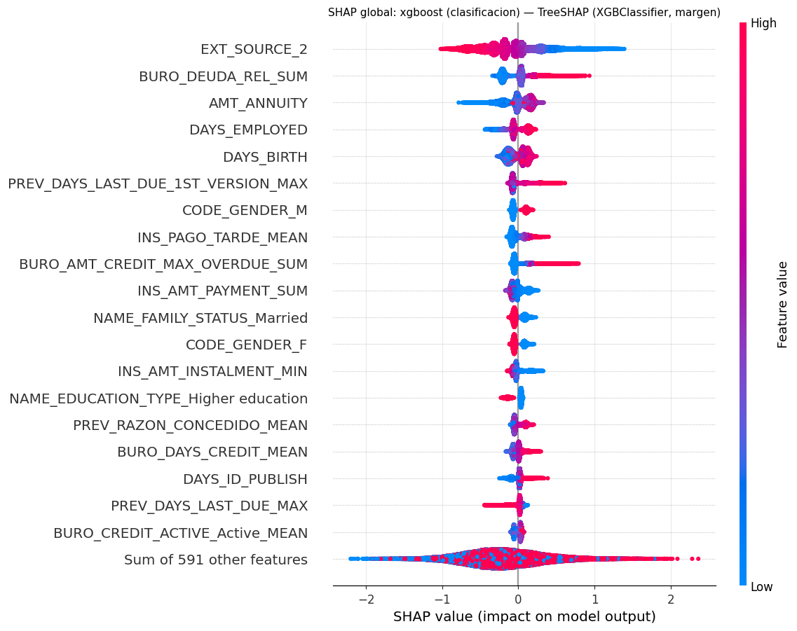
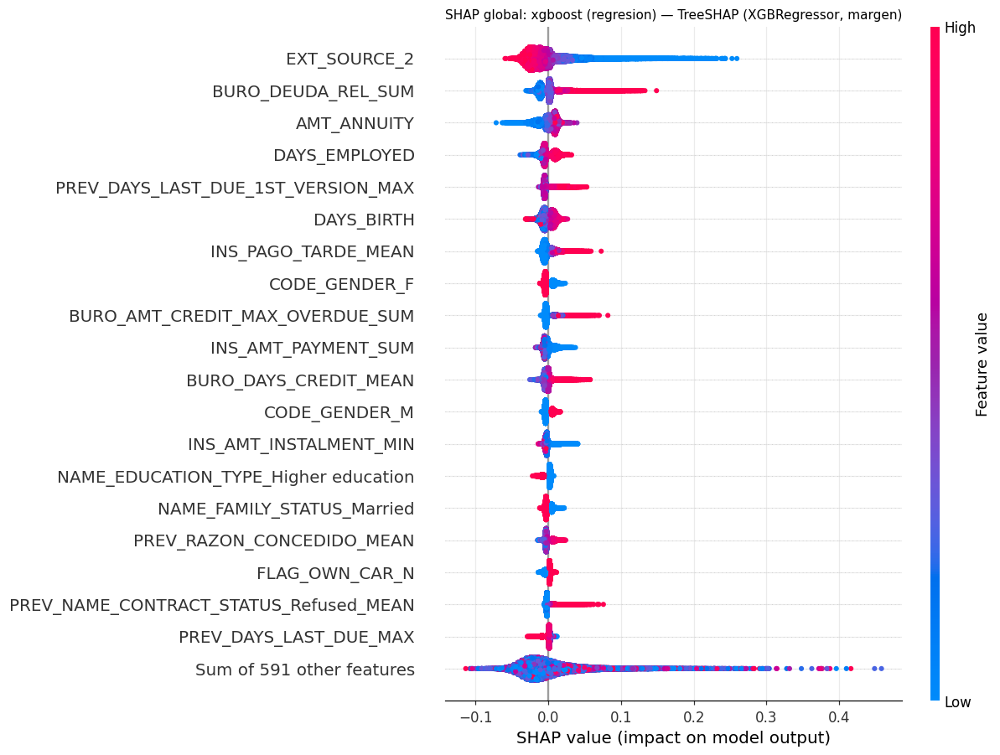
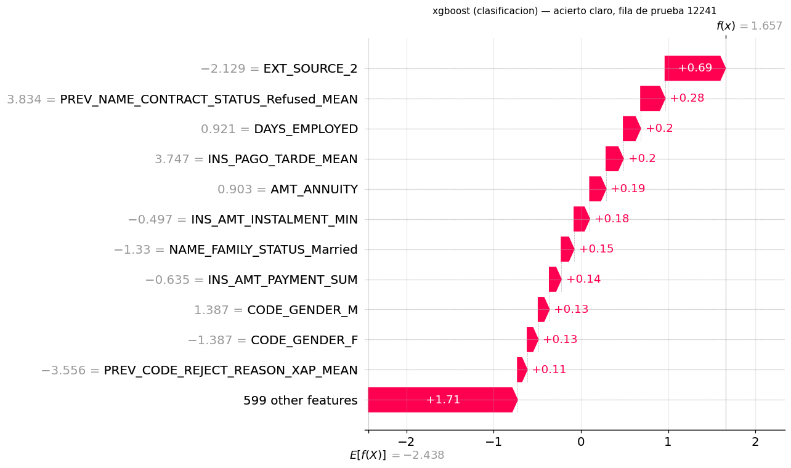
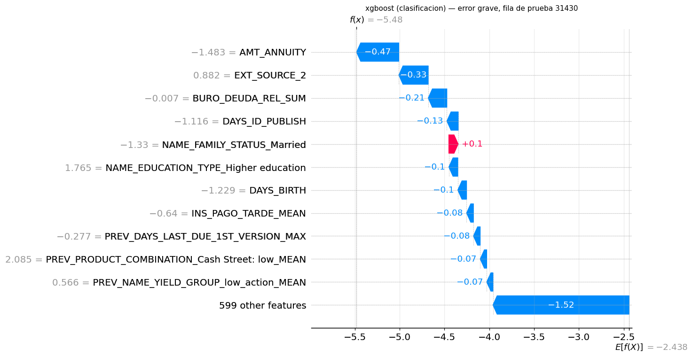
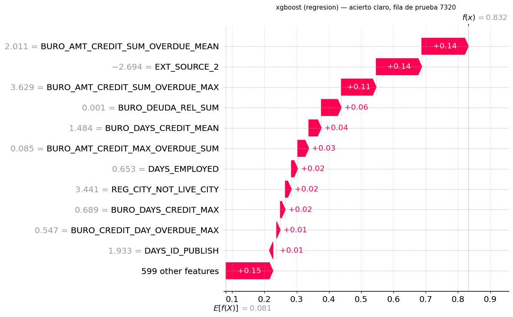
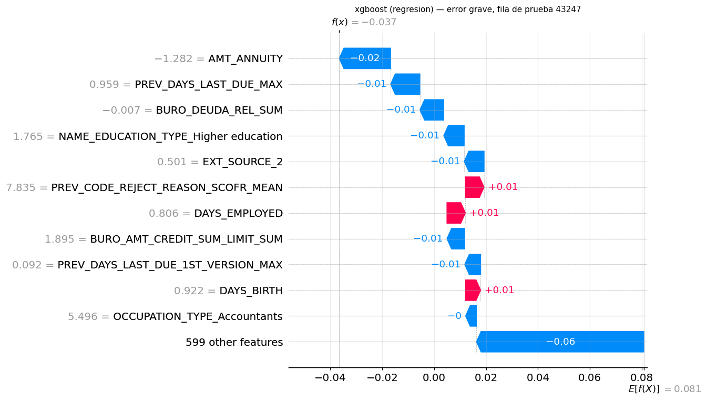
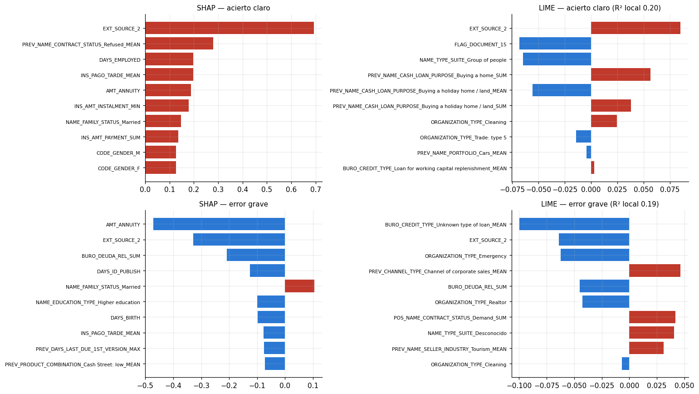

Interpretabilidad global y local: SHAP y LIME#
Sección 5.3 de la guía. Los valores de Shapley reparten la predicción de cada observación entre las variables según la teoría de juegos cooperativos: la contribución de una variable es su aporte marginal promedio sobre todas las coaliciones posibles de las demás. Satisfacen eficiencia (las contribuciones suman la diferencia entre la predicción y el valor base), simetría (dos variables que aportan lo mismo en toda coalición reciben lo mismo) y aditividad (la explicación de un ensamble es la suma de las de sus partes), lo que los hace comparables entre observaciones y agregables en una importancia global.
Se explican:
el mejor modelo de clasificación y el mejor de regresión, elegidos por AUC de validación cruzada (no por la prueba);
XGBoost de clasificación siempre, con SHAP y con LIME, como exige la Sección 7.2.
Las explicaciones se calculan sobre la prueba con los modelos finales del capítulo 06/07. Los valores de las variables están en la escala del preprocesamiento (estandarizados): un valor positivo significa «por encima de la media de desarrollo».
# --- preambulo comun: localiza la raiz del libro y carga el paquete src ------
import os, sys, warnings
from pathlib import Path
RAIZ = next(p for p in [Path.cwd(), *Path.cwd().parents]
if (p / "_config.yml").is_file() and (p / "src").is_dir())
if str(RAIZ) not in sys.path:
sys.path.insert(0, str(RAIZ))
# los procesos paralelos de joblib (loky) tambien deben encontrar `src`
os.environ["PYTHONPATH"] = str(RAIZ) + os.pathsep + os.environ.get("PYTHONPATH", "")
warnings.filterwarnings("ignore", category=FutureWarning)
warnings.filterwarnings("ignore", message="IProgress not found")
import numpy as np
import pandas as pd
import matplotlib.pyplot as plt
from IPython.display import display
from src import config, graficos
config.fijar_semillas()
config.crear_directorios()
graficos.estilo()
pd.set_option("display.max_columns", 60)
pd.set_option("display.width", 200)
print(config.resumen())
Raiz del proyecto : entregable3
Modo prueba : False
Semilla : 42
CV anidada : 5 externos x 3 internos
Evaluaciones/optimiz. : 20
Nucleos : 11 paralelo interno: True
XGBoost : device='cuda'
Random Forest : xgbrf KNN: torch
import shap
from src import experimento as ex, finales as fin, preprocesamiento as prep, datos, modelos as mod
pliegues, maestra = ex.consolidar()
conj = datos.cargar_traspaso()
part = prep.preparar_final(conj)
NOMBRES = part.columnas
X_te, y_te = np.asarray(part.X_va), np.asarray(part.y_va).astype(int)
rng = np.random.default_rng(config.SEMILLA)
X_fondo = np.asarray(part.X_tr)[rng.choice(len(part.y_tr), size=min(2000, len(part.y_tr)), replace=False)]
fc = fin.seleccionar_finalistas(maestra, "clasificacion")
fr = fin.seleccionar_finalistas(maestra, "regresion")
MEJOR_CLF, MEJOR_REG = fc.iloc[0]["modelo"], fr.iloc[0]["modelo"]
print(f"Mejor clasificador (AUC CV): {MEJOR_CLF} | mejor regresor (AUC CV): {MEJOR_REG}")
N_GLOBAL = 500 if config.MODO_PRUEBA else 5000
Mejor clasificador (AUC CV): xgboost | mejor regresor (AUC CV): xgboost
1. Cálculo de los valores SHAP#
El explicador depende del modelo, porque el valor de Shapley exacto es exponencial en el número de variables y cada familia admite un atajo distinto:
Modelo |
Explicador |
Coste |
|---|---|---|
XGBoost y Random Forest (bosque de XGBoost) |
TreeSHAP exacto implementado en XGBoost ( |
O(T·L·D²) por fila, en la GPU; se explica toda la prueba |
Árbol |
|
ídem; muestra estratificada de 5,000 filas |
Logística, Ridge, Lasso, SVM lineal |
|
O(p) por fila |
KNN, Naive Bayes, SVM con Nystroem |
|
caro; 300 filas |
def valores_shap(tarea, modelo, idx):
est = fin.cargar_modelo(tarea, modelo)
X = X_te[idx]
if hasattr(est, "get_booster"): # XGBoost y Random Forest (XGBRF)
import xgboost as xgb
contrib = est.get_booster().predict(xgb.DMatrix(X), pred_contribs=True)
return shap.Explanation(values=contrib[:, :-1], base_values=contrib[:, -1], data=X,
feature_names=NOMBRES), f"TreeSHAP ({type(est).__name__}, margen)"
if modelo in ("arbol", "random_forest"):
sv = shap.TreeExplainer(est)(X, check_additivity=False)
if sv.values.ndim == 3:
sv = sv[..., 1]
sv.feature_names = NOMBRES
return sv, "TreeExplainer"
lineal = modelo in ("logistica", "ridge", "lasso") or (
modelo in ("svm", "svr") and not hasattr(est, "steps"))
if lineal:
sv = shap.LinearExplainer(est, X_fondo)(X)
sv.feature_names = NOMBRES
return sv, "LinearExplainer"
fondo = shap.kmeans(X_fondo, 25)
expl = shap.KernelExplainer(lambda Z: mod.puntuar(est, Z, tarea), fondo)
vals = expl.shap_values(X, nsamples=300, silent=True)
return shap.Explanation(values=np.asarray(vals), base_values=np.full(len(X), expl.expected_value),
data=X, feature_names=NOMBRES), "KernelExplainer"
def indices(modelo, tarea, n):
if modelo in ("xgboost", "random_forest"):
return np.arange(len(y_te))
n = min(n if modelo != "knn" and modelo != "naive_bayes" and not modelo.startswith("sv") else 300, len(y_te))
from sklearn.model_selection import train_test_split
idx, _ = train_test_split(np.arange(len(y_te)), train_size=n, stratify=y_te,
random_state=config.SEMILLA)
return np.sort(idx)
def casos_locales(tarea, modelo):
d = fin.cargar_finales(tarea)[modelo]
s = d["s"]
pos = np.where(y_te == 1)[0]
return int(pos[np.argmax(s[pos])]), int(pos[np.argmin(s[pos])]) # acierto claro, error grande
EXPL = {}
objetivos = [("clasificacion", MEJOR_CLF), ("regresion", MEJOR_REG), ("clasificacion", "xgboost")]
for tarea, modelo in dict.fromkeys(objetivos):
try:
idx = indices(modelo, tarea, N_GLOBAL)
loc = casos_locales(tarea, modelo)
idx = np.union1d(idx, loc)
sv, metodo = valores_shap(tarea, modelo, idx)
EXPL[(tarea, modelo)] = {"sv": sv, "idx": idx, "loc": loc, "metodo": metodo}
print(f"{tarea}/{modelo}: {metodo}, {len(idx):,} filas")
except Exception as e:
import traceback; traceback.print_exc()
clasificacion/xgboost: TreeSHAP (XGBClassifier, margen), 61,503 filas
regresion/xgboost: TreeSHAP (XGBRegressor, margen), 61,503 filas
2. Interpretabilidad global#
El gráfico resumen muestra, para las 20 variables de mayor importancia media |SHAP|, la distribución de su contribución en cada observación (eje x) coloreada por el valor de la variable (rojo = alto). Combina magnitud (qué tan lejos del cero), dirección (izquierda = baja el riesgo) y la forma de la relación (si el color se separa limpiamente, la relación es monótona).
for (tarea, modelo), e in EXPL.items():
plt.figure()
shap.plots.beeswarm(e["sv"], max_display=20, show=False)
plt.title(f"SHAP global: {modelo} ({tarea}) — {e['metodo']}", fontsize=10)
graficos.guardar(plt.gcf(), f"08_shap_global_{tarea}_{modelo}")
plt.show()
imp = pd.Series(np.abs(e["sv"].values).mean(0), index=NOMBRES).sort_values(ascending=False)
imp.head(30).to_csv(config.DIR_RESULTADOS / f"importancia_shap_{tarea}_{modelo}.csv")


Lectura. El ranking SHAP coincide con lo que el EDA estableció, con una ausencia que lo explica
casi todo. EXT_SOURCE_2 es, con diferencia, la variable más influyente en los dos modelos XGBoost
(clasificación y regresión producen prácticamente el mismo ranking), con un efecto monótono: valores
bajos del puntaje externo elevan el riesgo. Le siguen variables de historial que la Fase 3 identificó
—la deuda relativa en la central de riesgo (BURO_DEUDA_REL_SUM), la mora máxima reportada
(BURO_AMT_CREDIT_MAX_OVERDUE_SUM), los pagos tardíos de cuotas anteriores (INS_PAGO_TARDE_MEAN) y
las solicitudes rechazadas en el pasado— y las de application sobre capacidad de pago y perfil:
anualidad, antigüedad laboral, edad, sexo, estado civil y nivel educativo.
EXT_SOURCE_1 y EXT_SOURCE_3, que el EDA situó entre las variables más asociadas con el objetivo,
no aparecen: el embudo de la Fase 3.5 las excluyó por cobertura insuficiente (43.6 % y 80.2 %,
por debajo del umbral de 85 % fijado a priori). Es probablemente la decisión del proyecto con mayor
coste predictivo, y se discute en las conclusiones.
Frente a la línea base logística, SHAP muestra lo que un modelo lineal no puede representar: una
misma variable aporta contribuciones distintas para valores parecidos (la dispersión vertical de
cada fila del gráfico, visible en DAYS_BIRTH, DAYS_EMPLOYED o AMT_ANNUITY), lo que indica
interacciones, y el bloque de las 591 variables restantes suma contribuciones de hasta ±2 en el
margen: buena parte de la señal está repartida en muchas variables individualmente débiles.
3. Interpretabilidad local#
Dos solicitantes que sí incumplieron: el que el modelo identificó con mayor puntaje (acierto claro) y el que recibió el menor puntaje (el error más grave: un incumplidor tratado como el cliente más seguro). El gráfico de cascada parte del valor base (predicción media) y suma la contribución de cada variable hasta la predicción de esa observación, lo que ilustra la propiedad de eficiencia.
for (tarea, modelo), e in EXPL.items():
pos = {f: i for i, f in enumerate(e["idx"])}
for etiqueta, fila in zip(("acierto claro", "error grave"), e["loc"]):
plt.figure()
shap.plots.waterfall(e["sv"][pos[fila]], max_display=12, show=False)
plt.title(f"{modelo} ({tarea}) — {etiqueta}, fila de prueba {fila}", fontsize=10)
graficos.guardar(plt.gcf(), f"08_shap_local_{tarea}_{modelo}_{etiqueta.split()[0]}")
plt.show()




Lectura. Los dos casos son incumplidores reales. En el acierto claro (fila de prueba
12241; margen 1.66 frente a una base de −2.44) casi todas las contribuciones empujan hacia el riesgo:
un EXT_SOURCE_2 muy bajo (−2.1 desviaciones estándar) aporta +0.69 por sí solo, y se suman una alta
proporción de solicitudes rechazadas en el pasado (+0.28), poca antigüedad laboral (+0.20), pagos
tardíos frecuentes en cuotas anteriores (+0.20) y la anualidad (+0.19). En el error grave (fila
31430; margen −5.48, el menor entre los incumplidores) ocurre lo contrario: anualidad baja (−0.47),
EXT_SOURCE_2 alto (−0.33), deuda relativa en la central cercana a la media (−0.21), educación
superior y mayor edad (−0.10 cada una). Es el perfil de un cliente de bajo riesgo, y ninguna de sus
variables anticipaba el incumplimiento: con la información disponible el modelo no tenía cómo
detectarlo. Ese es el límite irreducible de cualquier modelo sobre estos datos, y la razón por la
que un AUC de 0.77 deja una fracción de incumplidores con puntajes de cliente seguro.
4. SHAP frente a LIME en XGBoost#
LIME (Ribeiro et al., 2016) explica una predicción ajustando un modelo lineal ponderado a predicciones del modelo sobre perturbaciones de la observación; los pesos del modelo lineal son la explicación. Diferencias metodológicas con SHAP:
SHAP (TreeSHAP) |
LIME |
|
|---|---|---|
Fundamento |
Valores de Shapley: única atribución con eficiencia, simetría, aditividad y dummy |
Aproximación lineal local, sin garantías axiomáticas |
Exactitud |
Exacto para árboles |
Depende del muestreo, del núcleo de proximidad y de la discretización |
Estabilidad |
Determinista |
Varía con la semilla y el número de muestras |
Suma de contribuciones |
Igual a predicción − base |
No tiene por qué |
Qué explica |
Contribución frente al valor esperado del modelo |
Comportamiento del modelo en un vecindario de la observación |
Cuándo divergen. Con variables muy correlacionadas (en este conjunto hay pares con |r| > 0.9 que sobrevivieron al embudo), LIME perturba cada variable por separado y genera puntos fuera de la distribución de los datos, donde el modelo puede comportarse de forma arbitraria; SHAP reparte el efecto entre las correlacionadas. Divergen también con interacciones fuertes (un modelo lineal local no las representa) y cerca de umbrales de los árboles, donde la función es escalonada y el ajuste lineal depende del ancho del vecindario.
Se comparan las 10 variables principales de ambas explicaciones para los dos casos locales de XGBoost.
from lime.lime_tabular import LimeTabularExplainer
from scipy.stats import spearmanr
clave_xgb = ("clasificacion", "xgboost")
if clave_xgb in EXPL:
est_xgb = fin.cargar_modelo(*clave_xgb)
# LIME entrega matrices de numpy (CPU); predecir en la CPU da las mismas
# probabilidades y evita copiar cada lote a la GPU.
est_xgb.set_params(device="cpu")
fondo_lime = X_fondo
explicador_lime = LimeTabularExplainer(fondo_lime, feature_names=NOMBRES,
class_names=["cumple", "incumple"], mode="classification",
discretize_continuous=True, random_state=config.SEMILLA)
e = EXPL[clave_xgb]
pos = {f: i for i, f in enumerate(e["idx"])}
filas_cmp = []
fig, axes = plt.subplots(2, 2, figsize=(14, 8))
for k, (etiqueta, fila) in enumerate(zip(("acierto claro", "error grave"), e["loc"])):
le = explicador_lime.explain_instance(X_te[fila], est_xgb.predict_proba, num_features=10,
num_samples=500 if config.MODO_PRUEBA else 5000)
lime_w = pd.Series({NOMBRES[i]: w for i, w in le.as_map()[1]})
shap_v = pd.Series(e["sv"].values[pos[fila]], index=NOMBRES)
top_shap = shap_v.abs().sort_values(ascending=False).head(10).index
comun = set(top_shap) & set(lime_w.index)
union = list(set(top_shap) | set(lime_w.index))
rho = spearmanr(shap_v[union].abs(), lime_w.reindex(union).fillna(0).abs()).correlation
filas_cmp.append({"caso": etiqueta, "variables_en_comun_top10": len(comun),
"spearman_|peso|_union": rho,
"signo_coincide_en_comunes": float(np.mean([np.sign(shap_v[c]) == np.sign(lime_w[c])
for c in comun])) if comun else np.nan})
s = shap_v[top_shap][::-1]
axes[k, 0].barh(s.index, s.values, color=["#c0392b" if v > 0 else "#2a78d4" for v in s.values])
axes[k, 0].set_title(f"SHAP — {etiqueta}", fontsize=10)
l = lime_w.sort_values(key=np.abs)
axes[k, 1].barh(l.index, l.values, color=["#c0392b" if v > 0 else "#2a78d4" for v in l.values])
axes[k, 1].set_title(f"LIME — {etiqueta} (R² local {le.score:.2f})", fontsize=10)
for a in axes[k]:
a.tick_params(axis="y", labelsize=7)
fig.tight_layout()
graficos.guardar(fig, "08_shap_vs_lime")
plt.show()
display(pd.DataFrame(filas_cmp).style.format(precision=3).hide(axis="index"))

| caso | variables_en_comun_top10 | spearman_|peso|_union | signo_coincide_en_comunes |
|---|---|---|---|
| acierto claro | 1 | -0.547 | 1.000 |
| error grave | 2 | -0.393 | 1.000 |
Lectura. SHAP y LIME coinciden poco. Comparten 1 de las 10 variables principales en el acierto
claro y 2 en el error grave (EXT_SOURCE_2 en ambos casos y BURO_DEUDA_REL_SUM en el segundo),
siempre con el mismo signo, pero la correlación de Spearman entre las magnitudes de la unión es
negativa (−0.55 y −0.39). El R² del modelo lineal local de LIME es 0.20 y 0.19: la aproximación
explica una quinta parte del comportamiento del modelo en el vecindario, de modo que sus pesos no son
fiables. El patrón de las diferencias apunta al escenario de perturbaciones fuera de la distribución
descrito arriba: el top de LIME está dominado por indicadoras de categorías raras
(FLAG_DOCUMENT_15, tipos de organización, propósitos de préstamos anteriores como «Buying a holiday
home / land») que, al perturbarse de forma independiente, generan combinaciones inexistentes en los
datos, donde los árboles responden de forma arbitraria. Para este modelo, SHAP —exacto para árboles y
determinista— es la explicación a usar; LIME sirve como contraste, no como sustituto.